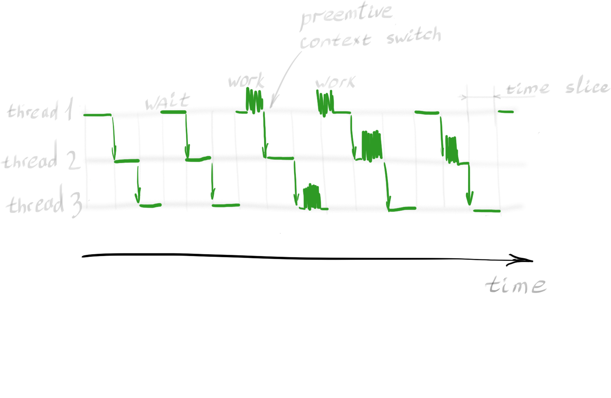
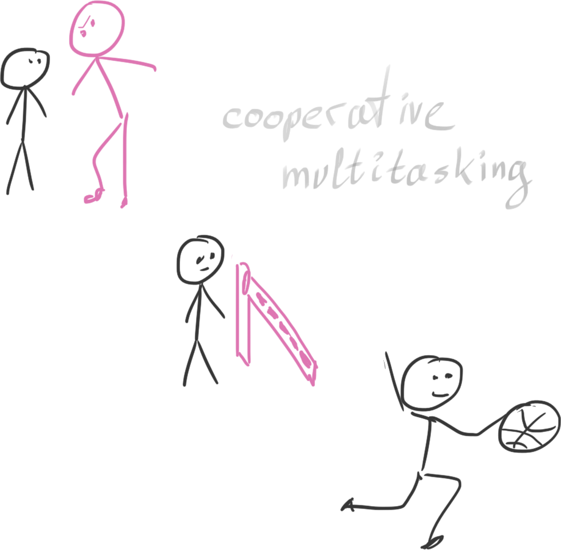
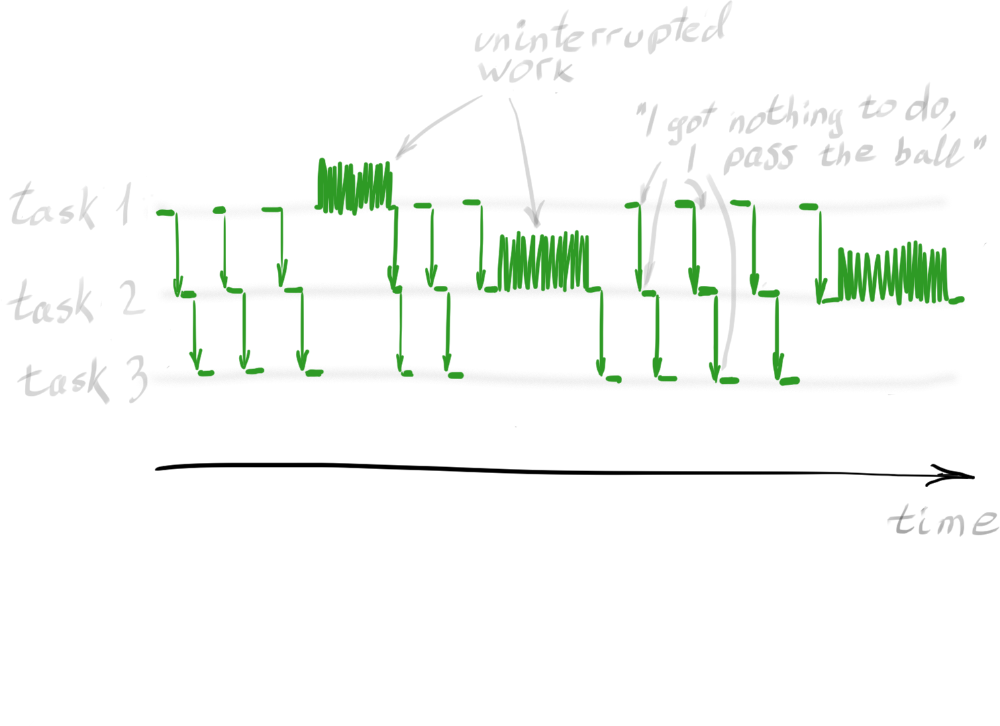
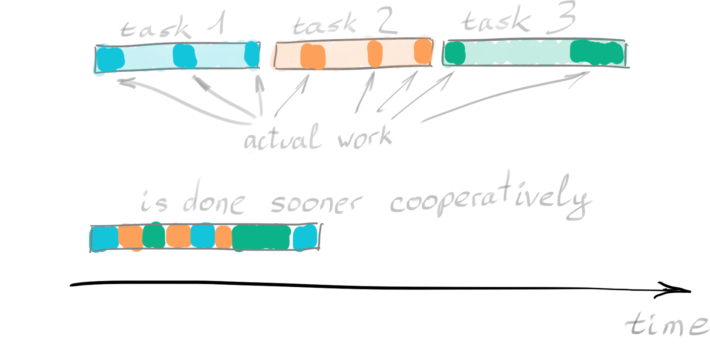

Imagine a cook in the kitchen, cooking three dishes. A steak, some boiled eggs and a salad. A cook with one-track mind could do only one dish at a time, defrosting meat, slicing it, putting it in the oven, waiting for it to be ready and only then proceeding to take eggs from the fridge, boil them, peels them, finally gets to do the salad.
That is obviously not the way cooks behave in a kitchen, because that would be massively ineffective.
While a cook can only do one thing at a time, be it slicing or peeling, there is an eternity of time to be saved by not sleeping on a job while waiting for something. Do the salad while the meat is in the oven, right?
In the software world, the cook is the CPU and the tasks it is faced with usually have long waiting periods in them too. So that CPU is idling most of the time, only ocasionally doing some work.
Actually, the retrieval of an external resource is a classic example associated with this kind of task. Let's take a closer look at this situation. Imagine we need to fetch 100 URLs from a remote server, and we do so sequentially. Actual work - sending a request or processing received response would be tiny compared to long periods of time wating for server to respond and for network to bring the answer to us.

Requests are executed synchronously, next one starting only after previous one has finished. To save time, we need to execute them in a more complex pattern, juggling them to achieve best efficiency.
One way to do it is with threads. This way several requests can be executed in parallel, switching between constantly and giving each one fixed amount of time to work. We still will be waiting for server responce, but at least we will be waiting for several requests at once.
Python provides a convenient API for carrying out this task. With several threads, each executing intermittently within its own time slice, our CPU utilization would look like this:
Threads/scheduler model and fixed timeslots leave few things to be improved.
It would be great if the switches would occur not at fixed time slices, scheduled by an over-watching system (so-called preemptive multitasking), but exactly at the time the task has completed its current job and starts waiting for the next action. That would be the perfect moment for this task to allow another task to be passed to the CPU. Such behavior is called “cooperative multitasking.”
Instead of Scheduler guy with a timeclock we have the Loop guy to whom tasks are instantly giving back control when they have nothing to do.
– Dave, you open?
– Nah
– Bill, can you go?
– Nope
– Jake, your turn. (Jake runs for the basket)
– (some time later): I'm done.
– Dave, how about now?
We need special functions to make this possible. Classical functions do not return control to anybody until they are completely done (or failed at their task). To make them collaborate we need them to be able to yield back control when they do not need it for a moment.
Such polite functions are called coroutines. A co-routine is a function that can suspend execution at some point and resume it later. By implementing our downloading application with co-routines, we will get a performance graph like this:
This method utilizes the CPU to near 100% capability, and thus greatly improves the application’s performance.
